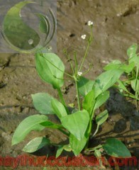

Tên khác:
Tên thường gọi: Vị thuốc Trạch tả còn gọi Thủy tả, Hộc tả, (Bản Kinh), Mang vu, Cập tả (Biệt Lục), Vũ tôn, Lan giang, Trạc chi, Toan ác du, Ngưu nhĩ thái, Du (Hòa Hán Dược Khảo), Như ý thái (Bản Thảo Cương Mục).
Tên khoa học của trạch tả: Alisma plantago aquatica L
Họ khoa học: Họ Trạch tả (Alismaceae).
Cây trạch tả
(Mô tả, hình ảnh cây trạch tả, thu hái, chế biến, thành phần hoá học, tác dụng dược lý ....)
Mô Tả:

Phân bố địa lý:
Cây mọc hoang ở những nơi ẩm ướt ở Sapa, Điện Biên, Cao Lạng.
Thu hái:
Mùa đông đào cả cây, cắt bỏ thân, lá và rễ tơ, rửa sạch, sấy khô.
Phần dùng làm thuốc: trạch tả
Thân rễ khô (Rhizoma Alismatis). Thứ to, chất chắc, mầu trắng vàng, bột nhiều là loại tốt.
Mô tả dược liệu: trạch tả

Hình cầu tròn, hình bầu dục hoặc hình tròn trứng, dài 3,3cm-6,6cm, đường kính 3-5cm. Vỏ thô, mặt ngoài mầu trắng vàng, có vằn rãnh nông quanh ngang củ, rải rác có nhiều vết tơ lồi nhỏ hoặc có lồi sẹo bướu. Chất cứng, mặt gẫy mầu trắng vàng, có bột, nhiều lỗ nhỏ. Mùi hơi nhẹ, vị hơi đắng (Dược Tài Học)
Bào chế:
+ Trạch tả: Ngâm nước thấm 8 phân, vớt ra, phơi khô.
+ Diêm Trạch tả: Phun đều nước muối vào miếng Trạch tả cho ẩm (cứ 50kg Trạch tả dùng 720g muối), rồi cho vào nồi, sao qua nhỏ lửa cho đến khi mặt ngoài thành mầu vàng, lấy ra phơi khô (Dược Tài Học).

Bảo quản:
Bảo quản nơi khô ráo, tránh ẩm mốc
Thành phần hóa học:
+ Alisol A, B, Epialisol A (Murata T và cộng sự, Tetra Lett 1968, 7: 849).
+ Alisol A Monoacetate, Alisol B Monoacetate, Alisol C Monoacetate (Murata T và cộng sự, Chem Pharm Bull 1970, 18 (7): 1347).
+ Alismol, Alismoxide (Oshima Y và cộng sự, Phytochemystry 1983, 22 (1): 183).
+ Choline (Kobayashi T, Dược Học Tạp Chí [Nhật Bản] 1960, 80: 1456).
Tác dụng dược lý
+ Thuốc có tác dụng lợi tiểu và làm cho Natri, Kali, Chlor và Urê thải ra nhiều hơn (Chinese Herbal Medicine).
+ Phấn Trạch tả hòa tan trong mỡ. Trạch tả cồn chiết xuất và cồn Trạch tả đều có tác dụng hạ Lipid trong máu rõ.
+ Trạch tả còn có tác dụng cải thiện chức năng chuyển hóalipid của gan và chống gan nhiễm mỡ (Chinese Herbal Medicine).
+ Cao cồn chiết xuất Trạch tả có tác dụng hạ áp nhẹ: cồn chiết xuất Trạch tả hòa tan vào nước có tác dụng gĩan mạch vành. Thuốc còn có tác dụng chống đông máu (Chinese Herbal Medicine).
+ Nước sắc Trạch tả có tác dụng hạ đường huyết (Chinese Herbal Medicine).
Vị thuốc trạch tả
(Công dụng, liều dùng, tính vị, quy kinh...)
Tính vị: trạch tả

+ Vị ngọt, tính hàn (Bản Kinh).
+ Vị mặn, không độc (Biệt Lục).
+ Vị ngọt, khí bình (Y Học Khải Nguyên).
Quy kinh: trạch tả
+ Vào kinh thủ Thái dương Tiểu trường, thủ Thiếu âm Tâm (Thang Dịch Bnr Thảo).
+ Vào kinh túc Thái dương Bàng quang, túc Thiếu âm Thận (Bản Thảo diễn Nghĩa Bổ Di).
+ Vào kinh Bàng quang, Thận, Tam tiêu, Tiểu trường (Lôi Công Bào Chích Luận).
+ Vào kinh Tỳ, Vị, Thận, Bàng quang, Tiểu trường (Dược Phẩm Hóa Nghĩa).
Tác dụng, Chủ trị:
+ Bổ hư tổn ngũ tạng, trừ ngũ tạng bỉ mãn,khởi âm khí, chỉ tiết tinh, tiêu khát, lâm lịch, trục thủy đình trệ ởbàng quang, tam tiêu (Biệt Lục).
+ Chủ Thận hư, tinh tự xuất, trị ngũ lâm, lợi nhiệt ở Bàng quang, tuyên thông thủy đạo (Dược Tính Luận).
+ Trị ngũ lao, thất thương, đầu váng, tai ù, gân xương co rút, thông tiểu trường, chỉ di lịch, niệu huyết, thôi sinh, sinh đẻ khó, bổ huyết hải, làm cho có con (Nhật Hoa Tử Bản Thảo).
Liều dùng: 8 – 40g.
Ứng dụng lâm sàng của trạch tả
Trị thủy ẩm ở vùng vị, dưới tâm, sinh ra hoa mắt, mê muội:
Bạch truật80g, Trạch tả 200g, Sắc uống (Trạch Tả Thang – Kim Quỹ Yếu Lược).
Trị thận hư, nội thương, thận khí tuyệt, tiểu buốt, tiểu không tự chủ:
Bạch long cốt 40g, Cẩu tích 80g, Tang phiêu tiêu40g, Trạch tả 1,2g, Xa tiền tử 40g. Tán nhỏ. Mỗi lần uống 8g với rượu ấm, trước bữa ăn (Trạch Tả Tán – Hòa Tễ Cục phương).
Trị có thai mà khí bị trệ, bụng trướng, bụng sưng, khí suyễn, táo bón, tiểu ít:
Chỉ xác, Mộc thông, Tang bạch bì, Binh lang, Trạch tả, Xích linh. Đều 30g. Tán bột. Mỗi lần dùng 12g, thêm Gừng 4g, sắc uống (Trạch Tả Tán – Hòa Tễ Cục phương).
Trị hư phiền, mồ hôi ra nhiều:
Bạch truật, Mẫu lệ, Phục linh, Sinh khương, Trạch tả. Sắc uống (Trạch Tả Thang – Ngoại Đài Bí Yếu).
Trị tiểu không thông:
Trạch tả, Xa tiền thảo, Trư linh, Thạch vi đều 12g, Xuyên mộc thông 8g, Bạch mao căn 20g. Sắc uống (Lâm Sàng Thường Dụng Trung Dược Thủ Sách).
Trị thận viêm cấp, tiểu ít, phù thũng thể dương tính:
Trạch tả, Trư linh, Phục linh, Xa tiền tử đều 16g, sắc uống (Lâm Sàng Thường Dụng Trung Dược Thủ Sách).
Trị Thận viêm mạn, chóng mặt:
Trạch tả, Bạch truật đều 12g, Cúc hoa 16g, sắc uống (Lâm Sàng Thường Dụng Trung Dược Thủ Sách).
Trị cước khí, táo bón, tiểu bí, phiền muộn:
Trạch tả, Xích linh, Chỉ xác, Mộc thông, Binh lang, Khiên ngưu. Lượng bằng nhau, tán bột. Mỗi lần uống 12g với nước sắc Gừng và Hành (Trạch Tả Tán - Lâm Sàng Thường Dụng Trung Dược Thủ Sách).
Trị tiêu chảy do thủy thấp, bụng sôi, bụng không đau:
Bạch truật 12g, Phục linh 12g, Trần bì 8g, Cam thảo 4g, Trạch tả 12g, Sa nhân 4g, Thần khúc 12g, Mạch nha 12g. Sắc uống (Tiết Tả Phương - Lâm Sàng Thường Dụng Trung Dược Thủ Sách).
Trị đình ẩm trong dạ dầy, tiêu chảy, tiểu ít:
Trạch tả 20g, Bạch truật 8g, sắc uống (Trạch Tả Thang - Lâm Sàng Thường Dụng Trung Dược Thủ Sách).
Trị ruột viêm cấp:
Trạch tả, Trư linh, Xích phục linh đều 12g, Bạch đầu ông 20g, Xa tiền tử 8g, sắc uống (Lâm Sàng Thường Dụng Trung Dược Thủ Sách).
Trị Lipid huyết cao:
Dùng Trạch Tả Hoàn (mỗi viên chứa 3g thuốc sống), ngày uống 3 lần, mỗi lần 3 viên. Liệu trình 1 tháng. Kết quả theo dõi 110 ca Lipit huyết cao trong đó có 44 ca Cholesterol cao, lượng bình quân 258,0mg% xuống còn bình quân 235,2mg%, 103 ca Triglycerid tăng, từ bình quân 337,7mg% xuống còn bình quân 258,0mg%, bình quân giảm 23,5mg%, trong đó số hạ thấp trên 10% chiếm 65%, hạ thấp trên 30% chiếm 40,8%, có 18,4% hạ thấp trên 50% (Bệnh Viện Trung Sơn trực thuộc Viện Y Học số I Thượng Hải, Trung Hoa Y Học Tạp Chí 1976, 11: 693).
Trị chóng mặt:
Dùng Trạch Tả Thang:Trạch tả 30-60g, Bạch truật 10-15g. Sắc uống ngày một thang. Theo dõi 55 ca, uống từ 1-9 thang, có tùy chứng gia vị thêm. Kết quả đều khỏi (Dương Phúc Thành, Hồ Bắc Trung Y Tạp Chí 1988, 6: 14).
Tham khảo
Lưu ý khi dùng trạch tả
- Uống Trạch tả nhiều quá thành ra chứng mắt đau (Biển Thước).
- Mắt thuộc bàng quang và thủy, vì thấm lợi thái quá cho nên nước khô đi mà hỏa thịnh nên gây ra đau mắt (Đan Khê Tâm Pháp).
- Trạch tả bẩm thụ táo khí của đất, khí mùa đông của trời để sinh. Trong bài Ngũ Linh Tán dùng nó vì nó vận hành được thấp, Bài Bát Vị Địa Hoàng Hoàn dùng nó để dẫn vào Thận. Trong thuốc bổ, Địa hoàng phải kèm với Trạch tả để tả Thận, tức là tả thấp hỏa trong thận thì bổ mới đắc lực. Cho nên người xưa khi dùng thuốc bổ phải kèm có cả tả tà, đó là khéo ở chỗ khơi ra rồi hợp lại, nếu chỉ bổ mà không tả thì có cái hại thắng lệch một bên, chỉ có đối chứng hư thoát thì lực bổ phải mạnh, không thể một chút chậm trễ được (Dược Phẩm Vậng Yếu).
- Phàm những chứng bệnh thủy thủng thì Trạch tả là 1 loại linh đơn (Trung Quốc Dược Học Đại Từ Điển).
+ Xét ra Trạch tả tính lạnh, đối với các chứng trong Thận và Bàng quang hư hàn, không thể chứa chịu để dần dần tiêu ra. Uống Trạch tả tính nó rút nước xuống quá thì tinh cũng phải do đó mà chảy theo. Nếu đã có chứng hư hàn ở hạ tiêu rồi thì không nên dùng. nếu thấy thấp khí bốc lên gây nên mắt đau là do nóng quá, tinh thủy tiết ra. Uống Trạch tả làm thanh giải, tiêu xuống thì khỏi sưng ngay mà tinh cũng cầm cố lại, vì vậy, bài Bát Vị Địa Hoàng Hoàn dùng Trạch tả để làm tiêu chất xấu làm hại Bàng quang và cũng có ý giúp cho những chất chậm tiêu của Địa hoàng dễ được tiêu nhanh khỏi đọng lại bên trong gây nên đầy trướng. Có người vì sợ mà bỏ Trạch tả đi, thiết tưởng đó không phải là ý hay, chẳng qua chỉ vì sợ mà mất cả ý hay của phép dùng thuốc vậy. Đôi khi uống bài Lục VịĐịa Hoàng Hoàn mà thấy đầy, đó cũng là vì không có vị Trạch tả. Còn như ông Biển Thước nói rằng do dùng nhiều Trạch tả quá làm tiêu hao hết nước gây nên mắt khô mà sinh đau, thì ông chỉ nói là đừng dùng nhiều chứkhông nói rằng không nên dùng hẳn đâu (Trung Quốc Dược Học Đại Từ Điển).
+ Bài Bát Vị Hoàn của Trương Trọng Cảnh dùng Trạch tả là vì tiểu không thông nên mới đưa vào. Về sau, Bài Lục Vị Địa Hoàng Hoàn dùng Trạch tả là để có thể tả Thận, khiến cho bổ mà không thiên thắng thì Địa hoàng mới không đầy trệ, sức bổ Thận càng mạnh (Đông Dược Học Thiết Yếu).
+ Trạch tả có công dụng tả Tướng hỏa vì tướng hỏa vọng động nên gây ra Di tinh, có Trạch tả thanh giải thì tinh tự giữ lại được (Đông Dược Học Thiết Yếu).
Kiêng kỵ:
+ Sợ Hải cáp, Văn cáp (Bản Thảo Kinh Tập Chú).
+ Lâm khát, thủy thủng, Thận hư: không nên dùng (Y Học Nhập Môn).
+ Không có thấp nhiệt, Thận hư, tinh thoát: không dùng (Lâm Sàng Thường Dụng Trung Dược Thủ Sách).
+ Can Thận hư nhiệt mà không thuộc thấp, không thuộc thủy ẩm: không dùng (Đông Dược Học Thiết Yếu).
Nơi mua bán vị thuốc TRẠCH TẢ đạt chất lượng ở đâu?
Trước thực trạng thuốc đông dược kém chất lượng, nguồn gốc không rõ ràng,... xuất hiện tràn lan trên thị trường, làm ảnh hưởng tới hiệu quả điều trị cũng như ảnh hưởng tới sức khỏe của bệnh nhân. Việc lựa chọn những địa chỉ uy tín để mua thuốc đông dược là rất quan trọng và cần thiết. Vậy khách hàng có thể mua vị thuốc TRẠCH TẢ ở đâu?
TRẠCH TẢ là vị thuốc nam quý, được sử dụng rộng rãi trong YHCT. Hiện tại hầu hết các cửa hàng thuốc đông dược, phòng khám đông y, phòng chẩn trị YHCT... đều có bán vị thuốc này. Tuy nhiên người mua nên chọn những địa chỉ có uy tín, đảm bảo chất lượng, có giấy phép hoạt động để mua được vị thuốc đạt chất lượng.
Với mong muốn bệnh nhân được sử dụng những loại dược liệu đúng, chất lượng tốt, phòng khám Đông y Nguyễn Hữu Toàn không chỉ là đia chỉ khám chữa bệnh tin cậy, uy tín chất lượng mà còn cung cấp cho khách hàng những vị thuốc đông y (thuốc nam, thuốc bắc) đúng, chuẩn, đạt chuẩn chất lượng. Các vị thuốc có trong tiêu chuẩn Dược điển Việt Nam đều được nghành y tế kiểm nghiệm đạt chất lượng tiêu chuẩn.
Vị thuốc TRẠCH TẢ được bán tại Phòng khám là thuốc đã được bào chế theo Tiêu chuẩn NHT.
Giá bán vị thuốc TRẠCH TẢ tại Phòng khám Đông y Nguyễn Hữu Toàn: 155.000vnd/1kg
Tùy theo thời điểm giá bán có thể thay đổi.
+ Khách hàng có thể mua trực tiếp tại địa chỉ phòng khám: Cơ sở 1: Số 481 lô 22 Lê Hồng Phong, Phường Gia Viên, Thành phố Hải Phòng
+ Mua trực tuyến: Thuốc được chuyển qua đường bưu điện. Khi nhận được thuốc khách hàng thanh toán tiền COD.
Tag: cay trach ta, vi thuoc trach ta, cong dung trach ta, Hinh anh cay trach ta, Tac dung trach ta, Thuoc nam
Thaythuoccuaban.com Tổng hợp
*************************